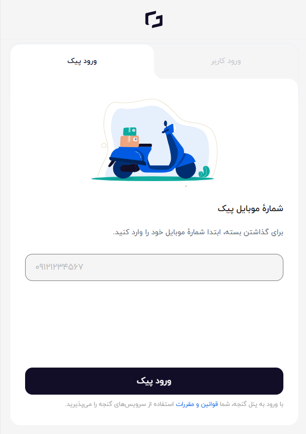
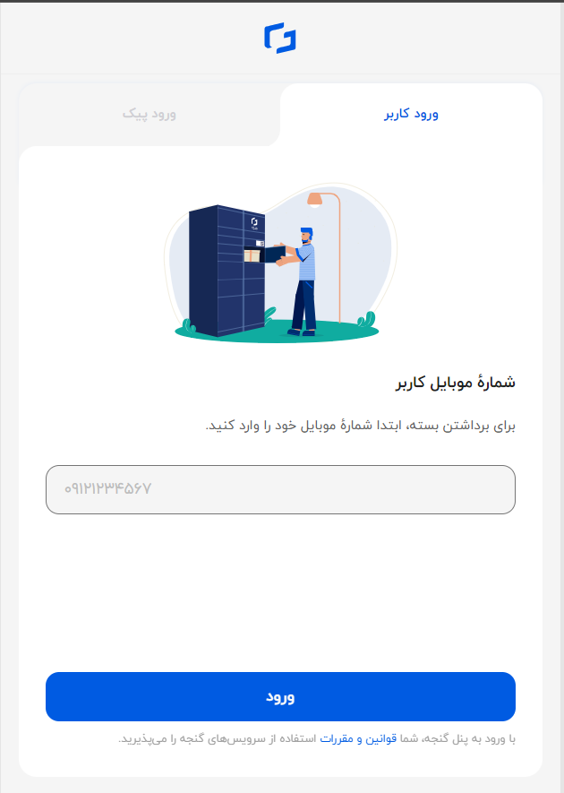

Projects
Ganje: Aug. 2020 - Mar. 2021
At Ganje, a startup specializing in smart lockers for commercial and industrial use, my role involved creating a new admin panel using jQuery and Bootstrap, as well as incorporating additional features into their ReactJS web application. To fulfill this responsibility, I embarked on a self-study journey and supplemented my learning by watching courses to gain proficiency in ReactJS.


After a three month period internship, I was promoted to a junior developer position and went on working there for another 5 month.